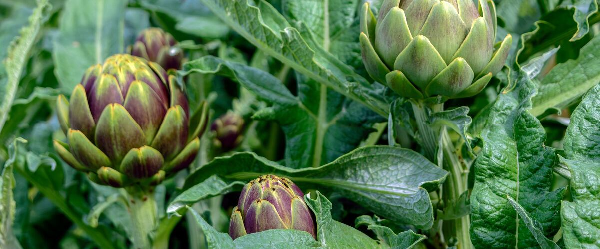

When to plant artichokes in Wenatchee, WA
Plant artichoke plants in Wenatchee Apr 1 – May 13.
- Difficulty
- Moderate
- Sun
- Full sun
- Spacing
- 3 to 4 feet apart
- Planting depth
- Plant starts at the depth they grew in the pot
- Frost
- Crowns survive about 15°F under thick mulch
- First harvest
- Buds in late summer the first year from Imperial Star; otherwise from early summer of year two
Why these dates
Wenatchee's typical last spring frost is April 8. As a hardy perennial, this crop doesn't need to wait for that date. In the Columbia Basin and low eastern valleys, though, the soil usually isn't ready to work until about April 1.
Columbia Basin and low eastern valleys. Hot, dry summers and quick spring warm-up. Warm crops go in earlier than west of the Cascades, and irrigation matters more than rain.
How to grow artichokes in Wenatchee
- Pick a sunny spot with soil that drains well, and mix in an inch or two of compost.
- Plant artichoke plants Apr 1 – May 13, 3 to 4 feet apart. Plant starts at the depth they grew in the pot.
- Water deeply and feed with compost; artichokes are big, hungry plants. Mulch to keep roots cool in summer and the crowns dry in winter.
- Harvest: Cut buds with an inch or two of stem while the scales are still tight. Smaller side buds follow the big central one.
Key numbers
- About 15°F, mulchedCrown hardiness
- 3–4 feetSpacing
- Year 1 (Imperial Star)First buds
- Crown rot in winterBiggest risk
Growing notes
What makes the difference in Northwest gardens, in plain language.
Perennial or annual
Artichokes are large perennial thistles from the Mediterranean. In mild gardens west of the Cascades, a well-mulched crown can come back for several years, with the biggest harvests from year two on. In colder areas, where crowns freeze, grow them as annuals.
Imperial Star was bred to bud in its first year. Artichokes need a spell of cool weather, roughly ten days or more below 50°F, to switch from making leaves to making buds. Set young plants out in spring while nights are still cool and they'll bud by late summer. Green Globe and Violetto usually wait until year two.
Getting crowns through a wet winter
Cold alone is rarely what kills artichokes here; cold plus soggy soil is. Water sitting around the crown rots it. Plant in a raised bed or a spot that drains well, and in fall cut the plants down to about a foot and pile a thick layer of straw or leaves over the crowns. Pull the mulch back in early spring as new growth appears.
Every few years, crowns get crowded. Dig and split off rooted side shoots in spring to replant or share.
Feeding, pests and harvest
Artichokes are big, hungry plants. Work plenty of compost into the bed and water deeply, since drought stress makes buds tough. Aphids gather under leaves and in buds; a strong spray of water knocks them off. Slugs and earwigs sometimes hide between the scales.
Cut buds while the scales are tight, with an inch or two of stem. If a bud opens, leave it: the purple thistle flower is beautiful and bees love it.
Common questions
When is the last frost in Wenatchee, WA?
Typically April 8. In 9 years out of 10, frost is over by April 23. These are 1991–2020 NOAA climate normals for Wenatchee Pangborn Airport.
Is it too late to plant artichokes in Wenatchee?
The spring planting window runs through May 13. Potted plants can still go in later if you water them faithfully through their first summer.
How long until I can pick artichokes?
Buds in late summer the first year from Imperial Star; otherwise from early summer of year two. Cut buds with an inch or two of stem while the scales are still tight. Smaller side buds follow the big central one.
Can artichokes grow in the Pacific Northwest?
Yes. West of the Cascades they often survive as perennials if the crowns are mulched and the soil drains well. In colder areas, grow Imperial Star as an annual for a first-year harvest.
When is an artichoke ready to pick?
When the bud is full size but the scales are still tight and closed. Once the scales start to spread, the bud becomes tough, though you can let it bloom for the flower.
How do I overwinter artichokes?
In fall, cut the plants down to about a foot and cover the crowns with a thick layer of straw or leaves. Good drainage matters as much as warmth, since soggy soil rots the crowns.
Also plant in Wenatchee around the same time
Planting dates for artichokes in nearby areas
- Omak and Okanogan, WA Apr 15 – May 27
- Chelan, WA Apr 1 – May 13
- Leavenworth, WA Apr 15 – May 27
- Winthrop and Twisp, WA Apr 17 – May 29
- Pendleton, OR Apr 1 – May 13
- The Dalles, OR Apr 1 – May 13
Full planting calendar for Wenatchee · Artichokes in every city